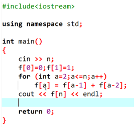
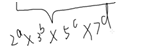
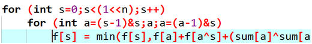

原文连接:https://www.cnblogs.com/zhuier-xquan/p/11203643.html
还是前置：
动态规划的三种实现方法：
递推，递归，记忆化搜索
然后还是从斐波那契数列开始引入：
两种求斐波那契数列的方法：
1.用其他位置的结果得到自己的结果：

2.用自己的结果算其他的结果；
以上两种方法都需要掌握，不同的题对应不同的写法；
3.记忆化搜索（虽然zhx说不是特别重要但lz比较喜欢写的）
没有记忆化之前：O（f[n]）与2^n差不多是一个级别的；
记忆化之后：

DP的一些一些要求：
无后效性：所有状态之间组成了一个DAG
阶段性：
转移方程：怎么算这个东西
状态：要算的东西对应的东西
乱序转移：
把所有状态当做点，所有转移当做边，然后进行拓扑排序；
要讲的几种DP：
l 数位DP
l 树形DP
l 状压DP
l 博弈论DP
l 区间DP
l 背包
乱序宣讲：
1.背包问题：
先看一个最简单的问题：
problem 1：
N个物品，M容量，每个物品都有体积和价值，最大化价值和；
典型的01背包问题，比较经典的例题是采药；
两种方法：1.用自己更新别人：
不选第i个物品，体积不变：f[i+1][j]=f[i][j]
选择第i+1个物品，体积增加：f[i+1][j+vi+1]=f[i][j]+wi+1
2.别人更新自己：
f[i][j]=max(f[i-1][j],f[i-1][j-vi]+wi)分别对应不选/选第i个物品；


#include<iostream> using namespace std; int n,m,w[233],v[233]; int f[233][233]; int main() { cin >> n >> m; for (int a=1;a<=n;a++) cin >> v[a] >> w[a]; for (int i=1;i<=n;i++) for (int j=0;j<=m;j++) { f[i][j] = f[i-1][j]; if (j >= v[i]) f[i][j] = max(f[i][j],f[i-1][j-v[i]]+w[i]); } int ans=0; for (int a=0;a<=m;a++) ans = max(ans,f[n][a]); cout << ans << endl; return 0; }
problem 2：（完全背包）
每个物品可以用无限次：
朴素的想法：
枚举第i个物品放了多少个；
但是显然O（n^3）不够优；
考虑优化：
f[i][j]来说，上面的思路是有i-1行的某个数转移过来的，但实际上我们并不需要这样枚举转移，我们可以从左侧转移，假设当前已经选了一个x物品了，如果我们由左边更新过来，那可能我们算到的正是已经选择过一个x物品的状态，这样，背包就变成无限的啦；
修改代码：
变成了可以由同一行转移过来，横着转移x次<=>我用了x个第i个物品；
problem 3：（多重背包）
如果每个物品可以用有限次？
考虑像完全背包一样枚举使用物品个数：
尝试优化：
vi*13：
造物品：
- 体积为vi只能用1次的物品，
- 体积为2vi只能用1次的物品；
- 体积为4vi只能用1次的物品；
- 体积为6vi只能用1次的物品；
- 可以把所有1~13内的体积表示出来
=>转化为01背包；
O（n^2*k）
怎么变成若干捆绑包？
先用二进制表示，不足二进制的再用总的减去
发现k≈logn
复杂度O(nmlogn)
绿框即为凑不够一个二进制然后减下来的
为什么可以把所有数表示出来？
恰好可以表示为x个二进制数：
这样对于每一位都有0/1两种情况，1~31的每个数，都可以写成5位内的二进制，然后每一位只有0和1嘛，显然都可以通过上面算出来，对于不是恰好拆分成二进制的，可以先不看最后的数，然后看成1~31+x；
造捆绑包：
基础DP：
problem 1：
- 数字三角形
- 给你一个三角形
- 问从怎么走能够取得最大代价
每次可以向下或向右下走，使得走过的这条路，所有数字之和最大；
正着推：f[i][j]=max(f[i-1][j],f[i-1][j-1])+a[i][j];最后要枚举最后一行哪一guo最大；
突然安利的oj：joyoi
数字三角形2：
#include<iostream> #include<cstdio> #include<algorithm> #define mod 100 using namespace std; inline int read(){ int ans=0; char last=' ',ch=getchar(); while(ch>'9'||ch<'0') last=ch,ch=getchar(); while(ch>='0'&&ch<='9') ans=(ans<<1)+(ans<<3)+ch-'0',ch=getchar(); if(last=='-') ans=-ans; return ans; } int n; int a[30][30]; bool f[30][30][110]; int main(){ n=read(); for(int i=1;i<=n;i++) for(int j=1;j<=i;j++) a[i][j]=read(); f[1][1][a[1][1]%mod]=1; for(int i=2;i<=n;i++){ for(int j=1;j<=i;j++){ for(int k=0;k<100;k++){ f[i][j][k]=(f[i-1][j-1][(k-a[i][j]+mod)%mod]|f[i-1][j][(k-a[i][j]+mod)%mod]); } } } bool bj=0; for(int k=99;k>=0;k--){ for(int i=1;i<=n;i++){ if(f[n][i][k]){ printf("%d",k); bj=1; break; } } if(bj==1) break; } return 0; }
自己更新别人，因此只需要算到n-1行；
当状态是可行的我们才用它更新别人；
转移啊：
最后计算答案：
枚举最后一行走到哪一列，然后枚举走出来的和%100是多少。
#include<iostream> #include<cstdio> #include<algorithm> #define mod 100 using namespace std; inline int read(){ int ans=0; char last=' ',ch=getchar(); while(ch>'9'||ch<'0') last=ch,ch=getchar(); while(ch>='0'&&ch<='9') ans=(ans<<1)+(ans<<3)+ch-'0',ch=getchar(); if(last=='-') ans=-ans; return ans; } int n; int a[30][30]; bool f[30][30][110]; int main(){ n=read(); for(int i=1;i<=n;i++) for(int j=1;j<=i;j++) a[i][j]=read(); f[1][1][a[1][1]%mod]=1; for(int i=1;i<n;i++){ for(int j=1;j<=i;j++){ for(int k=0;k<100;k++){ if(f[i][j][k]){ f[i+1][j][(k+a[i+1][j])%mod]=1; f[i+1][j+1][(k+a[i+1][j+1])%mod]=1; } } } } int ans=0; for(int i=1;i<=n;i++) for(int k=0;k<100;k++) if(f[n][i][k]) ans=max(ans,k); printf("%d",ans); return 0; }
最长上升子序列；
当n>=10^5，第二层j的枚举可以用线段树来做；
有时可以用数据结构优化DP
f[i]表示以第i个数结尾的最长上升子序列的长度，那么f[i]=max(f[j])+1,其中1<=j<i;
#include<iostream> #include<cstdio> #include<algorithm> using namespace std; inline int read(){ int ans=0; char last=' ',ch=getchar(); while(ch>'9'||ch<'0') last=ch,ch=getchar(); while(ch>='0'&&ch<='9') ans=(ans<<1)+(ans<<3)+ch-'0',ch=getchar(); if(last=='-') ans=-ans; return ans; } int n,ans; int p[1010],f[1010]; int main(){ n=read(); for(int i=1;i<=n;i++){ p[i]=read(); } f[1]=1;p[0]=-1; for(int i=2;i<=n;i++){ for(int j=0;j<i;j++){ if(p[i]>p[j]) f[i]=max(f[i],f[j]); } f[i]+=1; } for(int i=1;i<=n;i++) ans=max(ans,f[i]); printf("%d",ans); return 0; }
区间DP：
区间DP特征：给n个东西，每次只能合并两个相邻的东西；
最最最最最典型的例子，石子合并
合并的顺序不同，代价也不同；
f[l][r]把第l堆石子到第r堆石子合并成一堆的最小代价是多少；
f[l][l]=0；
合并[l,r]
我们可以找到一个分界线，先将分界线左边的石子合并为一堆，然后右边的合并成一堆，最后再将这两堆合并成一堆（将这两堆合并的代价是这一段石子的区间和）：
然后维护前缀和来计算区间和；
注意要枚举区间长度，然后枚举左端点，计算右端点；
切不可两层循环枚举左右端点；
一个有关矩阵乘法的问题：
矩阵乘法
自定义顺序
使得运算次数最少
矩阵乘法结合律：
N个矩阵， M1 , M2, M3……Mn
大小为： a1*a2 a2*a3 a3*a4 an*an+1
操作：合并两个相邻的矩阵；
目标：合并成一个矩阵；
f[l][r]把第l~第r个矩阵合并成一个矩阵；
f[l][r]=min(f[l][p]+f[p+1][r]+al*ap+1*ar+1)；
能量项链的说
状压DP：
n<=20（22）<=>状压
problem 1：p1171
第i个点坐标 xi，yi；
f[s][i]
s:n位的二进制数，已经走到过的点：{1,2,4,6}说明已经走过1,2,4,6点，对应二进制=>101011
转化为10进制：11=>01011；
常见压缩方法：把数组表示为k进制的数；
转移：枚举一个j，表示第j个点，然后要求j是没走过的；
因为是状压DP，为了方便二进制的表示，我们的循环从0开始。
初始化f数组为为超级大的一个数，然后f[s][i]表示状态s（转化为二进制后1代表已经走了这个数，0代表没有走这个点）并且现在在点i时的最短路径，显然起点1-1时为0（注意点的下标从0开始因此最后都要-1）
然后枚举状态，尝试转移：，j
然后枚举当前走到了哪个点，判断这种状态有没有被更新过，如果被更新过了，我们用它更新其他的点；
枚举接下来走哪个点，要注意判断这个点之前要没有走过，然后更新状态，将新状态赋值；
最后答案是枚举最后走到哪个点，然后加上最后走到的点到起点的距离，取最小，就是最后的答案；
伪代码：
#include<iostream> using namespace std; double f[][]; double x[233],y[233]; int main() { cin >> n; for (int a=0;a<n;a++) cin >> x[a] >> y[a]; f=∞ f[1][0]=0; for (int s=0;s<(1<<n);s++) for (int i=0;i<n;i++) if (f[s][i] < ∞) { for (int j=0;j<n;j++) if ( ((s>>j) & 1) == 0) { int news = s | (1<<j); f[news][j] = min(f[news][j],f[s][i] + dis(i,j)); } } for (int i=0;i<n;i++) ans=min(ans, f[(1<<n)-1][i] + dis(i,0)); return 0; }
problem 2：luogu1879
f[i][s]前i行草已经种完了，这一行的草长成s样时的方案数；
用二进制的数来代表第i行每个位置有没有种草
判断第i行S和第i+1行S’没有相邻的草：S&S’==0；
problem 3：p1896
n<=8
枚举怎么放国王，然后判断是否冲突，因为多了一个恰好，因此我们加一维：f[i][s][j]代表：i与s的表示同上题，j表示现在放了j国王了；
然后判断需要修改一下；
数位DP：
什么是数位DP？难啊
DP时按照数的每一位一位一位进行转移的；
举个栗子：
给定两个数l，r，问从了l~r有多少个数；
显然是ans=r-l+1
- 往往先进行前缀和转化；
从高位向低位
f[i][1/0] 已经填好第i位 j==0？ now<x:无法确定now（其实就是目前和x长得一样）；
在以上情况这种数有多少个；
考虑下一位要填什么数；
x只有l位，那么y的l+1,l+2……位（个位最小）只能填0，那么填第l+1位和x一样的方案数只有1中（全为0）
填了之后y>x；
problem2：
求[l,r]中的数的数位之和
仍然是维护一个前缀和：
problem 3：BZOJ1026 windy数
f[i][j][k]已经填好了第i位；j：</=；k：第i位填了k
保证第i位和第i+1位的数字大小差至少2；
差不多搞定了？
problem 4：BZOJ2757
K<=10^18;
有一些位置永远不会用到，比如13，存在的只能是<10的质数；
数组大小a：log210^18 b：log310^18 c：log510^18 d：log710^18
再优化：
把所有以上形式
的数算出来，大概有30000多个，预处理出来，然后放到数组中，然后转移f[i][j][k]，表示是这三万多个数中第k个数qwq；
树形DP：
假设为有根树；
从下到上
在每个点，维护以其为根的子树的信息；
problem 1：
求树上有多少个点？
f[i]表示以i为根的子树有多少个点？
problem 2：
求树的直径；
在树上找两个点，使他们距离最远；
从每个点向下走，最长和次长是多少
f[i][0]从i这个点向下走，最长的是多少；
f[i][1]从i这个点向下走，次长的是多少；
然后枚举在每个点转弯的最大值和次大值的和，求一个最大的；
f[i][0]=max(f[pj][0]) +1 pj∈son(i);
f[i][1]=max(f[pk][0])+1pk!=pj,pk∈son(i)避免和f[i][0]选到同一个位置去，那么f[pj][1]不能用了，其余的最长路显然大于次长路，因此只需要在剩余儿子中找一个最大的（总体次大的）；
problem 3：
求树上路径总长度和
f[i]表示以i为根的子树有多少个点；
然后
考虑一条边，会被多少条路径经过：
只要保证一个点在子树中，一个点在子树外面选一个点，一定会经过这条边，然后路径可以正着走，也可以反着走，需要*2
problem 4：Poj2342
f[i][0/1] 以i为根的子树中，选出若干个点，权值最大是多少
0=> i没选 1=>i选了；
最后答案：max(f[1][0],f[1][1])
f[i][1]=Σf[j][0]+a[i] j∈son(i)；
f[i][0]=Σmax(f[j][0],f[j][1]) j∈son(i)
#include<iostream> #include<cstdio> #include<algorithm> using namespace std; inline int read(){ int ans=0; char last=' ',ch=getchar(); while(ch>'9'||ch<'0') last=ch,ch=getchar(); while(ch>='0'&&ch<='9') ans=(ans<<1)+(ans<<3)+ch-'0',ch=getchar(); if(last=='-') ans=-ans; return ans; } int n,k,l; int f[6010][2];//1 choose this people/0 do not choose this people struct node{ int fa,cnt,r; int son[3001]; }p[6001]; void dfs(int node){ if(!p[node].cnt) { f[node][1]=p[node].r; f[node][0]=0; return; } for(int i=1;i<=p[node].cnt;i++){ dfs(p[node].son[i]); } for(int i=1;i<=p[node].cnt;i++){ f[node][1]+=f[p[node].son[i]][0]; f[node][0]+=max(f[p[node].son[i]][0],f[p[node].son[i]][1]); } f[node][1]+=p[node].r; } int main(){ n=read(); for(int i=1;i<=n;i++) p[i].r=read(); for(int i=1;i<n;i++) { l=read();k=read(); p[l].fa=k; p[k].son[++p[k].cnt]=l; } int s; for(int i=1;i<=n;i++){ if(!p[i].fa) dfs(i),s=i; } printf("%d",max(f[s][1],f[s][0])); return 0; }
problem 5：poj1463
f[i][0/1] 以i为根的子树所有节点都被守护(0i没有士兵，1i有士兵)所需最少士兵数量
f[i][0]=Σf[j][1] j∈son(i) //父亲不放士兵，所以儿子一定要放士兵
f[i][1]=Σmin(f[j][0],f[j][1])+1 j∈son(i) //父亲不放士兵，那么儿子放不放无所谓，取放与不放的最小值
up：消防局的设立；luogu2279
守护所有距离不超过2的节点：
f[i][0/1/2]以i为根的子树已经全部覆盖的情况下，i这个点向下走，到达最近的士兵的距离是0/1/2的最小士兵数；
相当于自己放士兵f[i][0]=Σmin(f[j][0/1/2])+1; j∈son(i);
相当于儿子放士兵f[i][1]再跑一个DP来求f[i][1]:
用另一个数组g[j][1/0]；已经确定了前j个儿子的取值，其中这j个儿子中有（1）没有（0）拿出一个0值（到达最近士兵距离为0）来更新答案；
相当于孙子放士兵f[i][2]
另一种解法：
定根之后，找到这棵树中深度最深的叶子节点：
1.自己 2.兄弟 3.父亲 4.爷爷
应该选择哪一种？
显然是4，因为把士兵放在1 2 3位置能覆盖到的所有节点，放在4都可以被覆盖；
找出深度最深的节点，找到他的爷爷，在爷爷的位置放一个士兵，把它爷爷能覆盖到的所有节点直接从树中删掉；
重复直到没有节点；
N堆石子，可以合并任意两堆，合并的代价是两堆的异或和；
状压dp。f[s]把s所对应的石子，合并为1堆的最小代价；

枚举0 2 3 5的一个子集，
枚举每个状态的石子总和
初始化，求最小，所以初始为无穷大。然后只合并一堆代价为0；
枚举s的子集a：
判断a为s的子集：
剩下那坨石子：a^s；

但是，这个算法过不了n=16 O(4^n)
改进：

O(3^n)
博弈论DP：
类型1：现在有一个游戏G，两个人玩，回合制，没有平局；胜负的区分方法：当某个人没办法进行操作时，这个人就输了；
然后两个人都绝顶聪明，会做出对自己最最最最有利的操作。
一般问的都是先手是否必胜，或者先手是否必败。
当走到某个状态后，无法再走，则再此点的人一定会输，称为必败态；
因为绝顶聪明，所以左上角的点是必胜态
f[s]=1/0 s是一个状态。状态s是否是必胜；
s1~sm如果存在f[si]=0（必败态），则有f[s]=1；
任意f[si]=1,则f[s]=0；
problem 1：
f[i][j]原数还剩下i，对手上一次减了j，这种情况是必胜，还是必败；
建议用记忆化搜索；
f[i][j]必胜or必败，g[i][j]i，j对应的状态算没算过；
第二类：n个游戏G1，G2……Gn，两个人，回合制，分出胜负，在每个游戏中都不能动的输；
取石子游戏：
n堆石子，a1，a2，……an；Alice and Bob，Alice先手。从某一堆石子中取走任意多个石子，当谁没法取石子，谁就输了
SG函数：
sg[必败态]=0;
此题中：sg[1]=1;sg[2]=2;
sg[x]所有可以转移到状态中的sg没有出现过的最小自然数；
在本题中，sg[n]=n；
如果一个游戏的sg!=0 先手必败；
sg=0先手必败；
SG定理：
n个游戏组合在一起的SG值，等于每个游戏的SG值异或起来；
取石子-改：
n堆石子，a1，a2，……an；Alice and Bob，Alice先手。从某一堆石子中取走1~4个石子，当谁没法取石子，谁就输了
sg[ai]=ai%5;
problem 4：
博弈论问题一般：把题目转化为基本的取石子问题；
算出每堆是奇数个还是偶数个，1为奇数，2为偶数；把所有奇数堆的下标取出来，异或起来=0先手必败，！=0先手必胜
把所有下标为奇数的位置的石子异或起来就是答案：

距离终点为奇数的格子上的棋子异或起来；
f[s] s:n位的二进制数，代表每个位置有没有被标记过，然后炸了。
考虑当做多个游戏
保证先手必胜，则先手涂色的左右两个都不能涂色，将剩余的拆成两个独立的游戏，再将其合并
sg[i]长度为i的横条，sg值是多少
BZOJ2789
f[x][y] =>f[1][x+y]
=>f[2x][y]
=>f[3x][y]
f[a][b][y] x=2^a*3^b;